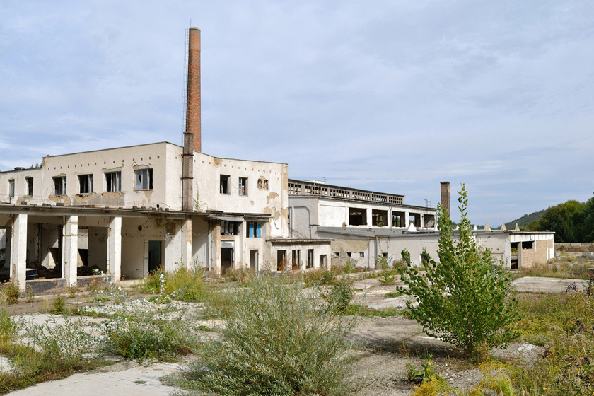
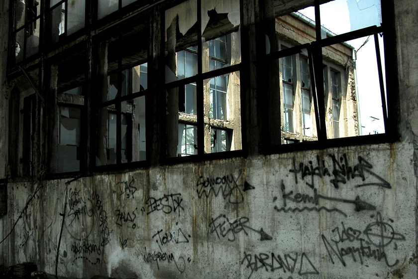

 A 2005-ben bezárt Parádsasvári Üveggyár hazánk egyik legrégebbi, a közel 300 évével szinte már történelmi jelentőséggel bíró gyára volt. Kezdete egészen a 18. század elejére vezethető vissza. A gyár elődjét 1708-ban, 307 esztendővel ezelőtt alapította meg II. Rákóczi Ferenc fejedelem Parádóhután, a mostani helyétől kilométerekkel arrébb, ami két évre rá, 1710-ben már meg is épül.
A kezdetekkor az üveggyártás fatüzeléssel működött, és ahogy az erdő fokozatosan „elfogyott” a gyár körül, úgy telepítették egyre odébb, mivel az akkori gazdasági számítások alapján kifizetődőbb volt az üzemet áttelepíteni, mint a tüzeléshez szükséges fát odaszállítani. Így került ezután az üzem Szuhahutára, Ötházhutára, aztán Fiskálihutára, majd pedig 1767-ben a végleges helyére: Parádsasvárra. Az elkövetkezendő években fellendült az ipar, fejlődésnek indult az üveggyártás, és ahogy az emberek egyre jobban kitanulták a mesterséget és minőségi termékeket állítottak elő, úgy lett a parádi üveg egyre népszerűbb. A gyár termelésének fellendülését és többszöri bővítését ugyanakkor a hírűvé vált parádi gyógyvíz palackozása is befolyásolta. 1867 után már évente 3,6 millió palack hagyta el az üzemet! A 20 század első évtizedeit kisebb megingásokkal átvészelte a gyár, de a második világégés már nyomot hagyott a történetében: a világháború kitörése után sorban szűntek meg a külföldi megrendelések, de a termelést ennek ellenére nem csökkentették.
Megrendelések hiányában a gyár működését végül 1948. október 10-én beszüntették. Három évvel a leállás után a nagy keresletre való tekintettel, - hiszen a parádi üveg hírneve és minősége nem kopott meg - gyárat 1951-ben újra üzembe helyezték. Végül a történelmi jelentőségű gyár nem érhette meg a 300. évét: 2005-ben, 297 évesen zárt be. A 300. évfordulója sem telt ünnepi módon: 2007-2008-ban elkezdték leszerelni a berendezéseket, elbontani az épületeket. Mára már csak az épületek egy része maradt meg.
 A vállalat, mint az ország első fésűsfonó- és szövőipari üzeme új iparágat honosított meg hazánkban és a 20-as évek időszakában abszolút monopolhelyzetben volt a magyar piacon.
Igazi konkurenciával talán csak a 30-as évek közepétől szembesült a cég többek közt a Csepeli Fésűsfonógyár Rt. és a Magyar Posztógyár Rt. “személyében”. A gyár 1944. decemberéig üzemelt, ezt követően bombatámadás érte és az 1945-ös szovjet-német összecsapásokat követően egészen 1952-ig a Szovjetunió tulajdonába került.
1953-tól a gyár a Magyar Népköztársaság tulajdonába került és a 60-as években a nagy gyárösszevonások idején egybeolvasztották a kistarcsai Fésűsfonó gyárral. Az így létrejött nagyvállalat a 60-as 70-es években ismét kiemelten fontos szerepbe került a gyapjúiparban, ráadásul a Terlyster szövet gyártásának köszönhetően a cég nemzetközi szintű elismerésre is szert tett. A 90-es évek privatizációját követően viszont a gyár felszámolásra került.